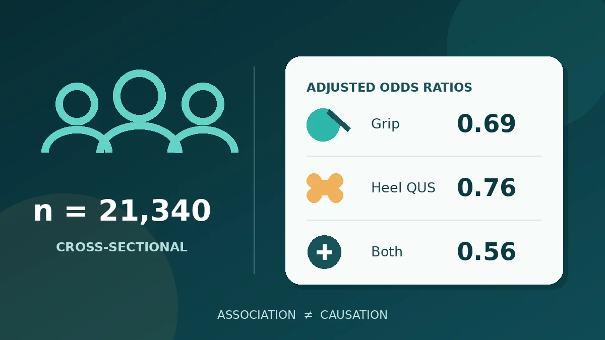

Daha yüksek yaşam tarzı puanı, çalışmada tanımlanan üç sonucun daha düşük olasılığıyla ilişkiliydi; fakat kesitsel tasarım davranış değişikliğinin bu göstergeleri mutlaka iyileştireceğini söyleyemez. Faz açısı ve topuk ultrasonu da burada araştırma ölçümleriydi; bulgular sarkopeni tanısının, standart kemik yoğunluğu ölçümünün veya kişisel değerlendirmenin yerini almaz.

Bir dakikalık özet
Da Xu, Yaoda Hu, Huijing He, Xingming Chen ve çalışma arkadaşları, toplum tabanlı kesitsel araştırmalarını 25 Ekim 2026'da yayımladı. Analiz, Çin'in beş il veya belediyesinde yaşayan 21.340 Han Çinlisi yetişkini kapsıyordu; ortanca yaş 55'ti ve katılımcıların yüzde 63,6'sı kadındı. Araştırmacılar dört bileşenli bir yaşam tarzı puanı ile biyoelektrik impedanstan elde edilen “faz açısının” el kavrama gücü ve topuk kemiği ölçümüyle ilişkisini sordu. [1]
Tam düzeltilmiş modelde yüksek yaşam tarzı puanı olanların, düşük puanlı gruba göre düşük kavrama gücü için olasılık oranı 0,69; kantitatif topuk ultrasonunda düşük kemik durumu için 0,76; iki sonucun birlikte görülmesi için 0,56 idi. Hem yaşam tarzı puanı hem faz açısı yüksek olanlarda birliktelik için en düşük tahmin görüldü: her iki göstergesi düşük gruba karşı 0,33. Bunlar düzeltilmiş göreli olasılık tahminleridir; kesin risk azalması yüzdeleri değildir. [1]
Tam olarak ne ölçüldü?
Sıfır ile dört arasındaki yaşam tarzı puanı; sigara, alkol tüketimi, egzersiz ve beslenmeye birer puan vererek oluşturuldu. Sıfır-bir düşük, iki orta, üç-dört yüksek sayıldı. Tanımlar önemlidir: Yeterli egzersiz haftada üç-yedi gün bildirilen aktiviteydi; beslenme bileşeni enerji ve besin öğelerinin ayrıntılı ölçümü yerine sekiz yiyecek davranışının sıklığına dayanıyordu. Alkol bileşeninde “zararlı tüketim” eşiğinin altındaki mevcut içiciler puan aldı; hiç içmeyenler ve eski içiciler birincil tanımda puan almadı. Bu nedenle puan, içmeye başlama önerisi veya klinik kontrol listesi değildir. Alternatif alkol tanımı ve alkolü dışlayan duyarlılık analizleri genel örüntüyü değiştirmedi. [1]
Kavrama gücü dinamometreyle ölçüldü; erkeklerde 35,5 kg, kadınlarda 20 kg altı “düşük” kabul edildi. Kemik durumu, kantitatif topuk ultrasonunda eksi birin altındaki T-skoruyla tanımlandı. Faz açısı, çok frekanslı biyoelektrik impedansta direnç ve reaktanstan hesaplandı; her cinsiyet için ayrı çeyreklikler halinde incelendi. Bu sayı dokunun elektriksel özellikleri, sıvı dağılımı ve hücre kütlesiyle ilişkilidir, ancak tek başına sarkopeni veya kemik hastalığı tanısı değildir. [1]
Bulgular ve sayıların anlamı
Örneklemin yüzde 12,8'inde düşük kavrama gücü, yüzde 23,9'unda QUS ile tanımlanan düşük kemik durumu, yüzde 4,3'ünde ise her ikisi vardı. Modeller yaş, cinsiyet, beden kitle indeksi, eğitim, gelir, yerleşim, mesleki aktivite, hipertansiyon, diyabet, dislipidemi, kalp-damar hastalığı, kanser ve kırık öyküsüne göre düzeltildi; kadınlarda faz açısı analizine menopoz durumu da eklendi. Yaşam tarzı puanındaki her bir puan artışı, iki sonucun birlikteliği için 0,80 olasılık oranıyla ilişkiliydi. Yine de bileşenlerin katkısı eşit değildi: Beslenme ilişkisi daha güçlüydü; egzersiz ve sigara bileşenleri birleşik sonuçta istatistik eşiğini geçmedi. [1]
Faz açısında da herkes için tekdüze bir örüntü yoktu. Erkeklerde en yüksek çeyrek, en düşük çeyreğe göre birliktelik için 0,39 olasılık oranıyla ilişkiliydi. Kadınlarda tahmin 0,82 idi ve yüzde 95 güven aralığı 0,57 ile 1,16 arasında olup biri içeriyordu. Bu sonuçta cinsiyet etkileşimi anlamlı değildi. Yaşam tarzı puanı ile faz açısının kendi aralarındaki çarpımsal etkileşimi de istatistiksel olarak anlamlı çıkmadı. Dolayısıyla ortak analizdeki 0,33 değeri, “kanıtlanmış sinerji” veya daha iyi sonuç garantisi sayılmamalıdır. [1]
Neden nedensellik göstermez?
Kesitsel tasarımda davranışlar, faz açısı ve sonuçlar yaklaşık aynı dönemde ölçülür. Düşük yaşam tarzı puanı ya da faz açısının kas-kemik bulgularından önce geldiği bilinmez; mevcut hastalık aktiviteyi, beslenmeyi veya vücut bileşimini değiştirmiş olabilir. İstatistiksel düzeltme birçok farkı hesaba katsa da kemik ve kası etkileyen ilaçlar, ayrıntılı beslenme ve başka hastalıklar gibi ölçülmeyen etkenler ilişkinin bir bölümünü açıklayabilir. Sonuç yaygın olduğunda olasılık oranı da risk oranıyla aynı değildir. [1]
Bu uyarı özellikle faz açısı için önemlidir. Daha yüksek değer daha iyi hücresel veya beslenme durumuyla birlikte görülebilir; fakat aralık cihaz, cinsiyet, yaş, sıvı dengesi ve topluma göre değişir. Çalışma bu sayıyı kasıtlı olarak yükseltmenin gücü ya da kemiği iyileştirdiğini göstermedi ve evrensel bir tanı eşiği önermedi. En makul yorum, davranışsal ve biyoelektrik göstergelerin bu örneklemde birbirini tamamlayan bilgi taşıdığı ve gelecekteki değişiklikleri öngörme değerlerinin boylamsal çalışmalarla sınanması gerektiğidir. [1]
Sınırlılıklar ve kanıt düzeyi
Katılımcılar Han Çinlisi yetişkinlerdi; bulguların başka etnik gruplara, ülkelere veya klinik ortamlara doğrudan aktarılması kesin değildir. Davranışlar özbildirime dayanıyordu; beslenme değerlendirmesi enerji, makro besinler, mikro besin yeterliliği ya da bölgesel gelenekleri kapsamıyordu. Kas sonucu yalnız kavrama gücüydü ve fiziksel performans ölçülmedi; dolayısıyla uzlaşı tanımlı sarkopeniyle eşdeğer değildir. Güç ile kas kütlesini birleştiren duyarlılık analizi benzer sonuç verdi, ancak kesme noktaları bu örneklemin kendi dağılımından türetildi. [1]
Kemik tarafında topuk QUS'u radyasyonsuz ve saha çalışmaları için kullanışlıdır; buna karşın merkezi DXA, dansitometrik tanı için başlıca referans olmaya devam eder. ISCD'nin resmi yetişkin pozisyonları tanıyı belirli DXA bölgelerine dayandırır. [2] Bu nedenle makaledeki “düşük kemik durumu”, osteoporoz tanısı diye okunmamalıdır. Kanıt, büyük bir gözlemsel çalışmadan geliyor: İlişki keşfetmek için değerli, fakat korunma etkisini kanıtlamak veya yeni bir tarama testi önermek için yetersiz.
Tedavi önerisi vermeden pratik anlam
Araştırma hareket, beslenme, sigara ve kas-kemik sağlığını birlikte düşünme yönündeki genel halk sağlığı yaklaşımıyla uyumludur; ancak tek bir kişi için hangi değişikliğin ne kadar yarar sağlayacağını göstermez. Özellikle çalışmanın alkol tanımı tüketim önerisi gibi yorumlanmamalıdır. Tüketici tipi faz açısı ölçümleri veya topuk ultrasonu da tıbbi değerlendirmenin, güç ölçümünün ve gerektiğinde DXA'nın yerine geçmez. Güçsüzlük, düşme riski ya da kemik sağlığı incelemesi; yaş, belirtiler, kırık öyküsü, ilaçlar ve profesyonel değerlendirmeyle belirlenmelidir.
Birincil kaynaklar
Yalnız özet değil; yöntemler, tablolar, tartışma ve sınırlılıkları içeren, hakem değerlendirmesinden geçmiş 17 sayfalık Article in Press tam metni incelendi. Makale kalıcı DOI ile 25 Ekim 2026'da yayımlandı, CC BY-NC-ND 4.0 lisanslı ve son sürümden önce düzenlenebilir. İnceleme sırasında makale sayfasında ve başlık/DOI taramasında düzeltme, geri çekme veya endişe bildirimi görülmedi. Eşlik eden görsel bağımsızdır; makalenin resmi şekli değildir.
- Xu D, Hu Y, He H ve diğerleri · Yaşam tarzı, faz açısı ve kas-kemik göstergeleri üzerine kesitsel çalışma · Journal of Health, Population and Nutrition · 25 Ekim 2026 · DOI: 10.1186/s41043-026-01491-8
- International Society for Clinical Densitometry · DXA ve dansitometrik tanı için 2023 resmi yetişkin pozisyonları
Bu yazı genel bilgilendirme amaçlıdır; kişiye özel tanı veya tedavinin yerini tutmaz.